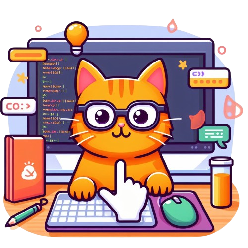

Sou a Evelyn Cassinotte, uma entusiasta da tecnologia em constante busca por novos horizontes no mundo do desenvolvimento de software. Possuo uma sólida formação técnica em informática pela ETEC e atualmente estou imersa nos desafios da graduação em Desenvolvimento de Software Multiplataforma pela FATEC-Jahu.
Desde o início da minha jornada, mergulhei de cabeça em projetos e aprendizados, buscando sempre aprimorar minhas habilidades e conhecimentos. Acredito que a tecnologia é uma ferramenta poderosa para transformar o mundo e estou empenhada em contribuir para esse avanço.
Este espaço é o resultado de uma atividade da matéria Desenvolvimento Web, do primeiro semestre do curso de Desenvolvimento de Software Multiplataforma e é o lugar onde compartilho meus projetos, conquistas e ideias. Aqui você encontrará um pouco do meu percurso, desde os primeiros passos até as conquistas mais recentes.
Seja bem-vindo(a) a um pedacinho do meu universo!Estas são algumas das atividades que eu realizo no meu tempo livre:

Os jogos de computador não apenas me proporcionam entretenimento, mas também me ajudam a relaxar e a recarregar as energias para os desafios do dia a dia.

Confeitar é uma forma de expressão onde posso compartilhar meu amor com amigos e familiares, deixando um pouco de doçura em cada pedaço.
Vamos nos conectar:
Se você tem alguma dúvida, sugestão, ou está interessado em colaborar em um projeto, não hesite em entrar em contato comigo!